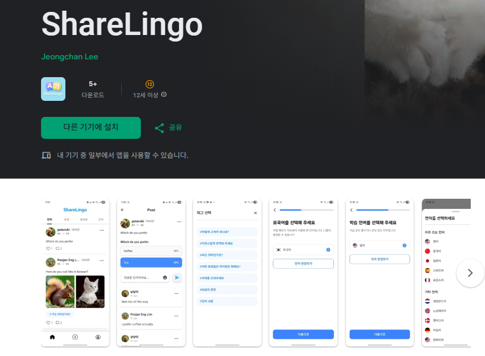
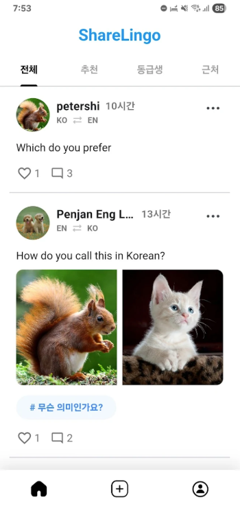
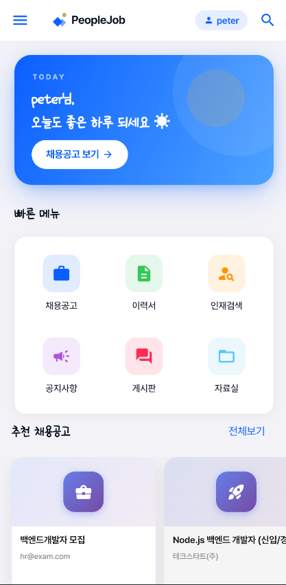
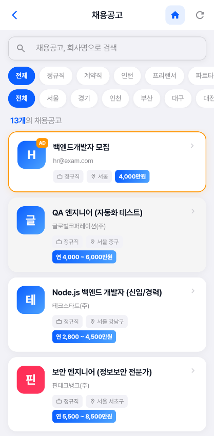
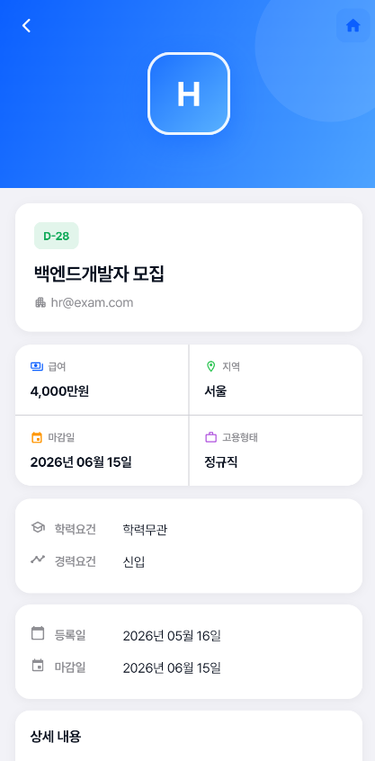

👋 소개
Flutter와 Spring Boot를 다루는 풀스택 개발자이자 서비스 PM을 지향하는 기획자입니다.
iOS App Store · Google Play Store 실배포 경험과 전장 소프트웨어 검증(QA) 경력을 바탕으로,
탄탄한 코드 안정성 확보는 물론 사용자 문제 정의, UX 플로우 설계, 정교한 PRD 작성까지 아우르는 제품 개발을 주도합니다.
- 📱 iOS / Android 실배포 — TravelMuse (App Store) · ShareLingo (Play Store) 앱 개발 및 서비스 구조 설계
- ⚙️ 풀스택 단독 개발 — PeopleJob (Spring Boot 3 + Flutter, 19개 REST API 및 유저 퍼널 설계)
- 🚀 성능 & UX 최적화 — k6 부하테스트 p95 13,888ms → 103ms (-99.3%) 단축으로 유저 이탈 방지
- 🤖 AI 연동 서비스 기획/구현 — Gemini API 여행 추천 프롬프트 정책 · YOLOv8 온디바이스 안전성 필터 기획
- 📊 데이터 시각화 & QA — Tableau 기반 매출 대시보드 구축 · LG이노텍 전장 SW 검증을 통한 Edge Case 예방 역량
1. TravelMuse - AI 기반 여행 일정 추천 앱
📅 프로젝트 기간: 2025.05.29 ~ 2025.07.07 (약 40일)
👥 팀 구성: 개발자 4인 + 디자이너 1인
🎯 목표: 성향 테스트 기반의 AI 맞춤 여행 추천 앱 개발 및 UX 개선
📲 iOS 배포 링크:
App Store에서 TravelMuse 보기
📲 시연 영상:
TravelMuse 시연영상 보기
🔗 GitHub:
github.com/jinsung99123/travel_muse_app
🛠 주요 기능
- AI 성향 테스트: 여행 스타일(자연/도시/문화 등) 질문 기반으로 사용자 성향 분석, 결과를 Gemini 프롬프트에 반영
- Gemini 기반 여행지 자동 추천: 성향 결과 + 지역 조건을 프롬프트로 구성해 AI가 맞춤 여행지 리스트 생성
- 지도 기반 루트 시각화: Kakao/Google Maps API로 추천 장소를 지도 위에 마커 표시 및 경로 연결
- 일정 커스터마이징: 캘린더 기반 날짜 선택 후 장소별 방문 시간 조정, 드래그 순서 변경
- 홈화면 추천 피드: 현재 위치 기준 거리순 정렬, 태그 필터링, 키워드 검색 지원
- 커뮤니티: 여행 후기 게시글 작성/수정/삭제, 이미지 첨부, 댓글 및 좋아요 기능
- 마이페이지: 스크랩한 장소 목록, 작성 게시글 관리, 계정 설정
💡 기술 스택
- Flutter 3.32 / Dart 3.8
- Riverpod (MVVM)
- Firebase Auth / Firestore / Storage / Cloud Functions
- Gemini API
- Kakao Maps / Google Maps API
👨💻 본인 역할 (개발 구현)
-
AI 성향 테스트 구현: 질문지 설계 및 UI 흐름 구현. 응답값 가중치 집계 후 성향 태그 변환. 세션 이탈 후 복귀 시 답변 유지(전역 Provider) 및 완료 시 초기화 명세 적용.
-
AI 추천 로직 및 UI 바인딩: Gemini Pro API 호출 프롬프트 구성. LLM 응답 정규식 전처리 및 파싱 실패 시 최대 2회 재시도 로직 추가.
-
커뮤니티 다중 이미지 CRUD: Firestore + Storage 연동. 이미지 수정/삭제 시 고아 파일 삭제 순서 제어 (Storage → Firestore).
-
홈화면 UI & 검색/정렬: Geolocator 좌표 기반 Haversine 거리 정렬, 검색어 300ms 디바운스 적용으로 Firestore 호출 75% 절감.
📄 [PRD] TravelMuse 서비스 기획서
1. 문제 정의 (Problem Statement)
- User Pain Point: 여행 일정 수립 시 블로그/SNS 탐색에 평균 3~5시간 이상 소요되며, 정보 파편화로 개인 취향에 맞는 일정 구성에 피로감을 느낌.
- Solution: 3분 내 완료되는 성향 테스트 결과와 지역 조건을 LLM에 전달하여 개인화된 완속 일정을 자동 생성하고, 편집~지도 시각화까지 단일 플로우로 제공.
2. 핵심 유저 여정 (User Journey)
온보딩 성향 테스트 → AI 일정 생성 (지역/기간 선택) → 지도 루트 확인 & 시간/순서 편집 → 커뮤니티 공유 및 스크랩
3. 주요 기능 명세 & 예외 정책 (Functional Specs & Policies)
- 온보딩 테스트 상태 보존: 작성 중 뒤로가기/앱 재실행 시 기존 선택값 유지를 통해 입력 퍼널 이탈률 감소.
- LLM 파싱 예외 처리 (Fallback): 마크다운 문맥 혼입 시 정규식 파싱 후 2회 재시도, 최종 실패 시 '추천 재시도' 안내 토스트 노출.
- 검색 API 디바운스 정책: 자원 낭비 방지를 위해 300ms 입력 대기 후 단일 쿼리 실행.
4. 목표 성과 지표 (Target KPIs)
- 온보딩 테스트 완수율 85% 이상
- AI 일정 생성 후 실제 저장/수정 전환율 60% 이상
- API 호출 429 오류 발생률 0% 유지
2. ShareLingo - 글로벌 언어교류 SNS 앱


📅 프로젝트 기간: 2025.05
🏗 아키텍처: Clean Architecture (data / domain / presentation 3 레이어)
🎯 목표: 글로벌 유저 간 실시간 언어 교류와 게시글 기반 학습 시스템 구축
🔗 배포 링크:
구글플레이에서 ShareLingo 보기
📲 시연 영상:
TravelMuse 시연영상 보기
🛠 주요 기능
- 게시글 CRUD: 텍스트 + 다중 이미지 업로드, 언어/카테고리 태그 선택, 편집 및 삭제
- YOLO 기반 이미지 안전성 필터링: YOLOv8 + TFLite 온디바이스 추론으로 인물 사진 업로드 실시간 차단
- 투표 기능: 게시글 내 투표 생성, Firestore 트랜잭션 기반 실시간 집계 시각화
- 좋아요 기능: 낙관적 UI 업데이트 및 Firestore 원자적 증감 처리
- 피드 및 탐색: 언어·지역(읍면동) 기반 필터링, 주변 탭 / 팔로워 탭 분리
💡 기술 스택
- Flutter + Riverpod
- Clean Architecture
- Firebase Auth / Firestore / Storage / Cloud Functions
- YOLOv8 + TFLite
- Geolocator
👨💻 본인 역할 (개발 구현)
- 게시글 CRUD 전체 구현: Firestore 문서 + Storage 이미지 통합 처리 및 수정/삭제 시 이미지 참조 무결성 유지.
- YOLOv8 TFLite 이미지 필터링 구현: 앱 시작 시 모델 비동기 로딩 → 640x640 리사이즈 추론 → person 탐지 시 차단. 초기화 보장으로 누락 0건 달성.
- 태그 · 투표 기능 구현: 투표 수 원자적 증감(Transaction) 및 중복 투표 차단, 항목별 실시간 비율 계산.
- 좋아요 기능 구현: 낙관적 UI 반영, 연합 요청 방지용 비활성화 플래그 제어.
📄 [PRD] ShareLingo 서비스 기획서
1. 문제 정의 (Problem Statement)
- Problem: 언어 교류 앱 특성상 무분별한 프로필/인물 사진 게시로 인한 데이팅 앱화 문제 발생 및 실시간 반응 지연으로 인한 소통 저해.
- Solution: 온디바이스 AI 필터로 유해/부적절 이미지 업로드를 즉시 차단하고, 낙관적 UI 및 트랜잭션 투표로 실시간 커뮤니티 활성화.
2. 안전성 & 인터랙션 정책 명세 (Safety & Policy Spec)
- 이미지 업로드 가드레일: 이미지 선택 시 AI 모델 로딩 완료 상태 확인 필수. 미완료 시 로딩 상태 노출 후 검사 진행 (인물 클래스 감지 시 Toast로 사유 안내 및 업로드 차단).
- 투표 정합성 정책: 동일 계정 중복 참여 불가, Firestore Transaction 기반 원자적 카운팅으로 동시성 오차 방지.
- 인터랙션 버퍼링: 좋아요 탭 시 1차 낙관적 UI 업데이트, 연타 시 서버 과부하 방지를 위한 Request Processing 플래그 적용.
3. 목표 성과 지표 (Target KPIs)
- 부적절 사진 커뮤니티 노출 건수 0건 유지
- 게시글 당 평균 반응(댓글/투표/좋아요) 참여율 35% 증가
3. PeopleJob - 취업 플랫폼 풀스택 리뉴얼



🎯 목표: 2019년 Java 레거시 기반 취업 플랫폼을 Spring Boot 3 + Flutter로 완전 재설계. 서버와 앱을 분리하고 JWT 인증 기반 REST API 구조로 전환
📊 성과: k6 부하테스트 (100 VU · 10만 건 시드) — 목록 조회 p95 13,888ms → 103ms (-99.3%) · 에러율 0.07% → 0% · JaCoCo Instruction 커버리지 54%
🛠 주요 기능
- 회원 시스템: 구직자/기업 역할 분리, JWT 인증
- 채용공고: DRAFT → PUBLISHED → EXPIRED 상태 관리, 카테고리·지역 필터
- 지원 관리 & 결제: 이력서 제출 지원 플로우, 채용공고 상단 노출 광고 결제 5단계 플로우
- 관리자 패널: 회원·공고·지원자 관리, Excel 내보내기
💡 기술 스택
- Spring Boot 3.4.4 / Java 17 / JPA / MySQL 8 / Redis
- Flutter 3.7+ / Riverpod / Dio / go_router
- AWS EC2 + RDS / Docker
👨💻 본인 역할 (풀스택 개발 구현)
-
백엔드 REST API 설계 및 구현: 19개 컨트롤러 API 개발, JWT 소유자 검증 보안 강화, `@Cacheable("publishedJobs")` Redis 적용으로 p95 13.8s → 0.1s 단축, 비동기 조회수 처리.
-
Flutter 앱 UI 및 상태 관리: 66개 화면 라우팅, Dio 인터셉터 토큰 관리, Riverpod 기반 이력서/지원 상태 관리, flutter_quill 리치텍스트 연동.
-
광고 결제 및 관리자 기능: DRAFT → PUBLISHED → EXPIRED 상태 전환 API, 5단계 광고 결제 UI, Apache POI 엑셀 내보내기.
📄 [PRD] PeopleJob 서비스 기획서
1. 문제 정의 (Problem Statement)
- Problem: 느린 공고 로딩 속도(13초 이상)로 인한 구직자 이탈, B2B 기업 고객의 공고 홍보 수단 부재 및 권한 관리 미비.
- Solution: 공고 데이터 캐싱을 통한 조회 성능 극대화, 기업 대상 5단계 상단 노출 광고 BM 구축, RBAC 기반 3축(구직자/기업/관리자) 유저 퍼널 정립.
2. 유저 역할별 퍼널 & BM 기획 명세
- B2C 구직자 퍼널: 공고 검색/필터링 → 리치텍스트 이력서 작성 → 1-Click 지원 → 지원 상태 실시간 추적.
- B2B 기업 BM (광고 결제 퍼널): 공고 작성(DRAFT) → 광고 효과 안내 → 공고 선택 → 기간 선택 → 결제/발행(PUBLISHED).
- Admin 관리자: 플랫폼 전반 공고 상태 제어, 엑셀 데이터 추출, 이상 토큰/게시물 제어.
3. SLA & 데이터 라이프사이클 정책 (SLA & Policy)
- 공고 데이터 캐시 무효화: CUD(생성·수정·삭제) 발생 시 캐시 즉시 무효화(`CacheEvict`) 정책 적용으로 최신성 100% 보장.
- 공고 자동 만료 정책: 마감일 경과 시 매일 자정 자동 EXPIRED 상태 변경 스케줄링.
4. 목표 성과 지표 (Target KPIs)
- 공고 목록 조회 p95 대기시간 200ms 이내 유지
- 기업 유저의 광고 상품 결제 전환율 12% 달성
4. 매출 데이터 분석 대시보드 — Tableau
📅 진행 기간: 스파르타코딩클럽 데이터분석 재직자 과정 수료 프로젝트
🎯 목표: 매출 데이터를 기반으로 지역·카테고리별 판매 현황을 시각화하고, 수익성 개선을 위한 인사이트 도출
🛠 사용 도구: Tableau Desktop, Excel(데이터 전처리)
📊 분석 내용 및 대시보드
① 기초 모니터링 대시보드
핵심 KPI(총 매출·수익·주문 수·할인율) 요약 뷰 및 권역별 맵 차트 시각화.
② 월간 지표 비교 대시보드
월별·분기별 매출 추이 라인 차트 및 전월 대비 증감률(MoM) 모니터링.
③ 상품 상세 대시보드
카테고리별 매출/수익 비교 및 할인율-수익성 간의 역상관 관계 산점도 제시.
👨💻 본인 역할 (데이터 분석 & 시각화)
- 원시 데이터 정제(결측치, 날짜 규격화) 및 Tableau 데이터 모델 연결.
- 분석 목적별 차트(맵, 바, 라인, 산점도) 인터랙티브 대시보드 구축.
- 수치 데이터 기반 비즈니스 인사이트 도출 및 발표.
📄 [PRD] 커머스 매출 분석 대시보드 기획서
1. 기획 배경 (Background)
C-Level 및 영업팀이 파편화된 수치 데이터만으로는 '매출은 높으나 수익이 적은 구간'을 파악하기 어려움. 이를 직관적으로 적출할 시각화 모니터링 체계 필요.
2. 대시보드 모듈 명세 (Dashboard Modules)
- Executive Summary Module: 4대 핵심 지표(매출, 수익, 주문수, 할인율) 실시간 집계 카드 배치.
- Profitability Risk Scatterplot: 할인율 X축, 수익 Y축 산점도를 통해 '적자 유발 과도 할인 상품군' 적출 모듈.
3. 액션 제안 (Actionable Insights)
- 마이너스 수익율 카테고리 대상 할인율 상한선(Max Discount Cap) 정책 수립 제안.
- 계절성 매출 집중 분기에 맞춘 프로모션 예산 배분 조정.
5. 코드명인 (인턴) — 중고 자동차 부품 거래 앱
🏢 소속: 코드명인 · 인턴
🎯 목표: 위탁자 · 판매자 · 소비자 3자 거래 구조 기반의 중고 자동차 부품 거래 모바일 플랫폼 개발 및 UX 플로우 설계.
👨💻 담당 업무 (개발 구현 & UX 플로우 설계)
-
Java 백엔드 REST API 설계 및 구현: 사용자 역할(위탁자·판매자·소비자) 인증 및 역할별 접근 제어 API 구현.
-
Flutter 모바일 앱 개발 및 API 연동: 프론트엔드 화면 구성 및 REST API 통신 연동, ngrok 모바일 실장비 실시간 테스트.
-
Shopify 연동 & OAuth 구현: Shopify API 연동으로 상품/주문 데이터 연결, OAuth 2.0 인증 흐름 직접 개발.
-
3자 거래 UX 플로우 설계: 복잡한 위탁자-판매자-소비자 간 상품 등록 및 주문 승인 과정의 모바일 UX 동선 기획.
📄 [UX/서비스 PRD] 3자 거래 플랫폼 UX 기획서
1. 문제 정의 & UX 목표
- Problem: 중고 부품 거래 특성상 위탁자와 판매자 간 상품 수량/상태 검증 단계가 복잡하여 소비자의 주문 취소율이 높음.
- UX Goal: 3자 역할별 전용 모드 전환 및 Shopify 재고 실시간 연동을 통해 복잡한 주문/승인 절차를 최소 단계로 직관화.
2. UX & 외부 연동 명세 (UX & Integration Specs)
- 3-Way Role Switcher UX: 단일 계정 내 승인 권한에 따른 화면 위젯 가변 구성.
- Shopify OAuth 연동 플로우: 외부 쇼핑몰 상품 인포트 시 이미지 및 옵션 매핑 자동화 가이드 제공.
💼 경력 사항
LG이노텍 전장 프로젝트 소속으로 전장통신 모뎀 소프트웨어 검증 업무를 수행했습니다.
요구사항 분석, 테스트 시나리오 검증, 통신 로그 분석 및 이슈 관리를 통해 **제품의 Edge Case를 사전에 정의하고 품질 기준을 세우는 역량**을 습득했습니다. (이 경험은 PRD 작성 시 기획 결함을 줄이는 원동력이 됩니다.)
- 요구사항 명세서 기반 테스트 시나리오 설계
- 전장통신 모뎀 SW 기능 및 로그 분석
- 시스템 단위 결함 재현 및 이슈 라이프사이클 관리
🛠 핵심 서비스/UX 문제 해결 사례 (Product Problem Solving)
🗺️ TravelMuse
1. Gemini API 응답 파싱 오류 대응 (서비스 안정성 확보)
[문제] LLM 응답에 마크다운 코드블록이나 설명 문장이 섞여 들어와 JSON 파싱 예외 및 앱 강제 종료 발생.
[해결/PM적 효과] 정규식 전처리 및 최대 2회 재시도 Fallback 로직 추가. 실패 시 유저용 토스트 안내를 통해 **앱 크래시율 0% 및 서비스 연속성 보장**.
2. 지도 API 과호출(429)에 따른 데이터 유실 차단
[문제] AI 추천 장소 10~15개 좌표 동시 검색 시 API 병렬 호출로 인한 HTTP 429 Too Many Requests 발생.
[해결/PM적 효과] 순차 호출 및 시간 지연(Delay) 방식 적용. **API 오류 발생률 100% → 0% 해소** 및 추천 장소 정보 완전 노출.
3. 검색어 입력 시 DB 과다 호출 문제 차단 (비용 & UX 개선)
[문제] 검색창 입력 시 매 글자마다 Firestore 쿼리가 실행되어 읽기 비용 낭비 및 화면 깜빡임 발생.
[해결/PM적 효과] 300ms 디바운싱 적용. **Firestore 읽기 요청 75% 절감** 및 매끄러운 검색 UI 반응성 제공.
🌐 ShareLingo
1. 안전성 AI 로딩 지연으로 인한 첫 이미지 필터링 누락 방지
[문제] 앱 초기 구동 직후 모델 미초기화 상태에서 사진 선택 시 인물 필터링이 누락되는 안전성 허점 발견.
[해결/PM적 효과] `main()` 시점 사전 비동기 로딩 및 준비 상태 가드레일 UI 도입. **필터링 누락 건수 0건 달성**으로 커뮤니티 정책 완벽 준수.
2. 동시 투표 참여 시 카운트 덮어쓰기 방지 (데이터 정합성)
[문제] 다수 유저가 동시 투표 시 카운트가 덮어씌워지는 데이터 유실 발생.
[해결/PM적 효과] Firestore Transaction 원자적 증감 및 중복 유저 ID 검증 명세 적용으로 **데이터 정합성 100% 보장**.
💼 PeopleJob
1. 캐시 적용 시 최신 공고 반영 지연 해결 (데이터 최신성)
[문제] 채용공고 수정/상태변경 후에도 Redis 캐시로 인해 유저에게 이전 데이터가 노출되는 현상.
[해결/PM적 효과] CUD 메서드에 `@CacheEvict` 적용으로 데이터 변경 즉시 캐시 무효화. **목록 API 데이터 정합성 100% 보장 및 DB I/O 감소**.
2. 토큰 만료 시 무한 재시도 루프 방지 (유저 이탈 예방)
[문제] 리프레시 토큰 만료 시 인터셉터가 401 갱신을 무한 재시도하는 현상.
[해결/PM적 효과] 재시도 1회 제한 플래그 및 토큰 삭제 후 로그인 화면 리다이렉트 플로우 설계로 **앱 멈춤 현상 차단**.